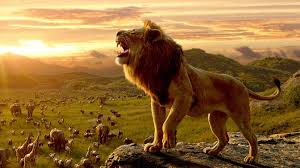

Il re leone (The Lion King) è un film del 2019 diretto e co-prodotto da Jon Favreau.
Prodotta dalla Walt Disney Pictures, la pellicola è un remake shot-for-shot fotorealistico in CGI dell'omonimo film del 1994, ispirato a sua volta all'Amleto di William Shakespeare.
Con 1,663 miliardi di dollari, è diventato il nono film con maggiori incassi nella storia del cinema, il secondo film con maggiori incassi del 2019, superando Frozen - Il regno di ghiaccio e stabilendo così il record per il film d'animazione di maggior incasso di tutti i tempi.
La critica cinematografica ha apprezzato gli effetti visivi, la musica e le performance vocali dei cantanti presenti nel cast statunitense, apprezzando un maggior coinvolgimento di artisti africani o di origine africana, ma è rimasta delusa per la mancanza di originalità e di emozioni facciali dei personaggi. Il film ha ricevuto una candidatura per la categoria miglior film d'animazione alla 77ª edizione dei Golden Globe e alla 25ª edizione dei Critics' Choice Awards. Ha ricevuto anche una candidatura alla 73ª edizione dei premi BAFTA e alla 92ª edizione dei premi Oscar, entrambe per gli effetti visivi.

TRAMA
Mufasa e Sarabi, i leoni sovrani delle Terre del Branco, convocano tutti gli animali della savana per celebrare la nascita del loro primogenito Simba. Il piccolo Simba viene innalzato dal mandrillo sciamano Rafiki davanti a tutti gli animali delle Terre del Branco. Dopo la cerimonia, Mufasa va a trovare suo fratello minore Scar, rimproverandolo per non essere venuto alla cerimonia. Scar è geloso di Simba, perché con la nascita del principe, lui è stato espulso dalla successione al trono, passando al secondo posto.
Alcuni mesi dopo, Simba è cresciuto ed è diventato un leoncino curioso ed energico, affascinato dall'idea che diventerà re come suo padre. Un giorno Mufasa lo accompagna per il regno, spiegandogli le responsabilità di un re e illustrandogli il Cerchio della Vita, da cui tutto proviene e a cui tutto fa ritorno. Ben presto però, il maggiordomo Zazu, un bucero beccogiallo, avverte Mufasa che le iene sono penetrate nelle Terre del Branco, perciò il leone si reca a combattere e ordina a Zazu di riportare Simba alla Rupe. Poco dopo, Simba incontra Scar: il malvagio zio gli rivela l'esistenza del Cimitero degli Elefanti, un pericoloso posto oltre i confini del regno, e il leoncino, incuriosito, decide di andarci di soppiatto con la sua amica Nala. I due seminano Zazu (incaricato di tenerli d'occhio) e raggiungono il Cimitero degli Elefanti, venendo però scoperti e attaccati dalle tre iene Shenzi, Kamari e Azizi e dai loro numerosi simili che popolano il luogo. Proprio mentre tutto sembra perduto, arriva in soccorso Mufasa che riesce a cacciare via le iene, traendo in salvo i cuccioli. Al calar del sole, Mufasa ordina a Zazu di riportare a casa Nala. Mufasa rimprovera Simba sia per essere andato al cimitero degli elefanti che per aver messo in pericolo Nala e gli rispiega che un re non può fare tutto ciò che vuole, ma deve agire con saggezza. Subito dopo, padre e figlio fanno la pace. Indicando il cielo stellato, Mufasa spiega a Simba che tutti i grandi re del passato li guardano da lassù. Nel frattempo, Scar entra nel territorio delle iene, rimproverandole per non essere riuscite a uccidere i due cuccioli. Kamari insinua che potrebbero pur sempre divorare lui, allora Scar propone loro un piano: uccidere Mufasa in modo che lui possa diventare re e permettere alle iene di entrare nelle Terre del Branco, dove potranno nutrirsi a volontà.
Il giorno dopo, Scar porta Simba in una gola, dove gli dice che se vorrà rendere orgoglioso suo padre dovrà allenare il suo ruggito. Lasciato solo il nipote, Scar ordina alle iene di attaccare un'enorme mandria di gnu: gli erbivori, terrorizzati dalle iene, si riversano nella gola in cui si trova il leoncino. Mufasa viene avvertito da Scar, scende nella gola e mette in salvo Simba, venendo però trascinato via dalla mandria in fuga; egli poi riesce ad arrampicarsi per una ripida parete della gola, trovando Scar ad aspettarlo in cima. Sfinito, Mufasa implora il fratello di aiutarlo, ma Scar lo fa precipitare nel burrone dove il leone viene travolto dagli gnu in corsa. Dopo che la mandria si allontana, Simba scende nella gola e trova Mufasa, ormai morto. Scar sopraggiunge e inizialmente finge di consolare il nipote, salvo poi accusarlo di aver causato la morte del re e gli ordina di scappare via e di non tornare mai più nelle Terre del Branco. Simba corre via e lo zio ordina alle iene di inseguirlo e di ucciderlo, ma il leoncino riesce comunque a fuggire cadendo da un dirupo, riuscendo a salvarsi e facendo credere alle iene di essere morto, per poi scappare nel deserto. Nel frattempo, Scar torna alla Rupe dei Re, compiange sia il fratello che il nipote e si auto-proclama come nuovo re, permettendo così alle iene di vivere nelle Terre del Branco insieme ai leoni.
Dopo una lunga e stremante fuga, Simba sviene nel deserto e rischia di essere divorato dagli avvoltoi, ma per fortuna viene trovato e salvato da Timon e Pumbaa, un suricato e un facocero, che prendono il cucciolo con loro insegnandogli il motto di "Hakuna Matata", per vivere senza pensieri e preoccupazioni. Passano gli anni e Simba cresce, diventando un leone adulto,inoltre si è lasciato il passato alle spalle vivendo spensierato nella giungla.
Nel frattempo, Scar e le iene hanno distrutto le Terre del Branco, perché la loro caccia eccessiva, oltre all'enorme numero di iene, ha fatto fuggire tutte le mandrie e reso le Terre del Branco una terra arida e desolata, senza più cibo e senza più acqua. Scar cerca di convincere Sarabi a diventare la sua compagna, ma lei rifiuta; infuriato, il malvagio leone decreta che i leoni, d'ora in poi, mangeranno solo dopo che le iene si saranno sfamate. Nala, anch'ella cresciuta, fugge via dalle Terre del Branco per cercare aiuto.
Un giorno, Timon e Pumbaa vengono improvvisamente attaccati da una leonessa: mentre il facocero e il suricato stanno per essere divorati, interviene Simba, che affronta la leonessa, salvo poi accorgersi che si tratta proprio di Nala. Entrambi sono felicissimi di essersi ritrovati dopo molto tempo, anche se nessuno dei due riesce a confessare il suo amore per l'altro. Al calar della sera però, Nala dice a Simba di tornare subito alla Rupe dei Re per affrontare Scar. Tuttavia, sentendosi ancora in colpa per la morte del padre, Simba rifiuta e così lui e Nala si separano. Calata la notte, Simba incontra Rafiki, che aveva scoperto che il leone è ancora vivo grazie a un ciuffo del suo pelo trasportato dal vento e dagli altri animali fino a lui. Rafiki porta Simba a uno specchio d'acqua, dicendogli che Mufasa non lo ha mai abbandonato veramente e che vive ancora in lui. Infatti, sulla superficie dell'acqua appare il riflesso di Mufasa, il cui spirito si manifesta anche nel cielo sotto forma di nube temporalesca: Mufasa, con voce amorevole, ricorda a Simba che lui è l'unico vero re, e che deve tornare nelle Terre del Branco per prendere il suo posto nel Cerchio della Vita. Dopo aver sentito le parole del padre, Simba finalmente capisce che è il momento di ritornare a casa, lungo il tragitto ritrova Nala con cui si riappacifica e insieme partono alla volta della Rupe dei Re.
Giunti alle Terre del Branco vengono raggiunti anche da Zazu, Timon e Pumbaa, e mentre gli ultimi due distraggono un gruppo di iene, Simba e Nala raggiungono la Rupe, al cospetto di Scar, le leonesse e le altre iene: qui una discussione tra Scar e Sarabi è sfociata in una lotta, visto che Scar, furioso perché Sarabi gli aveva rinfacciato di non valere niente rispetto a Mufasa, l'aveva attaccata. Simba giunge sul posto e ordina allo zio di cedergli il posto come re, ma Scar riesce a volgere rapidamente la situazione a suo favore e costringe Simba ad ammettere di essere stato lui a causare la morte di Mufasa. Le leonesse sono sconvolte e Simba, affranto, indietreggia di fronte a Scar, scivolando giù dalla Rupe e rimanendo aggrappato sul ciglio, mentre un fulmine si abbatte su un albero e fa scoppiare un incendio. Mentre si appresta a gettarlo tra le fiamme, Scar rivela a Simba la verità: è stato lui a uccidere Mufasa. Simba, sconvolto e arrabbiato, azzanna il mento di Scar e riesce a risalire sulla Rupe, accusando lo zio di aver ucciso Mufasa davanti alle leonesse. La prova schiacciante della colpevolezza di Scar è che Sarabi lo ha sentito dire a Simba di aver visto il terrore negli occhi di Mufasa prima che questi morisse, mentre tempo prima aveva detto alle leonesse di non essere giunto alla gola in tempo per salvare il fratello e il nipote. Dopo esser stato smascherato, Scar ordina in tono perentorio alle iene di uccidere Simba e le sue alleate; inizia così una feroce e rabbiosa battaglia tra i leoni e le iene, a cui partecipano anche Timon, Pumbaa, Zazu e Rafiki. Nala affronta Shenzi e riesce a sconfiggerla, subito dopo tutte le iene vengono messe in fuga. Scar si inerpica sulla sommità della Rupe, ma Simba lo raggiunge: lo zio, messo alle strette, implora di essere risparmiato e addossa la colpa alle iene, definendole dei "disgustosi spazzini" (senza neppure rendersi conto che alcune di esse erano in ascolto), ma Simba non gli crede e non volendo uccidere lo zio, come lui fece con Mufasa, gli ordina di scappare e non tornare mai più. Scar inizialmente si sottomette, ma poi attacca a tradimento il nipote: i due leoni combattono e alla fine Simba riesce a sconfiggere lo zio facendolo precipitare dalla Rupe dei Re. Scar sopravvive alla caduta, ma non muore per mano del nipote, bensì circondato e sbranato vivo dalle iene furiose e adirate per il suo tradimento.
Alla fine, il regno di terrore e distruzione di Scar finisce definitivamente. La pioggia cade e spegne l'incendio, irrigando la terra riarsa, le iene fuggono via e Simba diventa finalmente il Re delle Terre del Branco. Poco tempo dopo, queste sono di nuovo rigogliose e popolate dalle mandrie di animali, Simba prende Nala come sua regina consorte e dalla loro unione nasce una cucciola, che viene presentata in una gloriosa cerimonia e innalzata da Rafiki, proprio come lui fece col piccolo Simba.
Personaggi